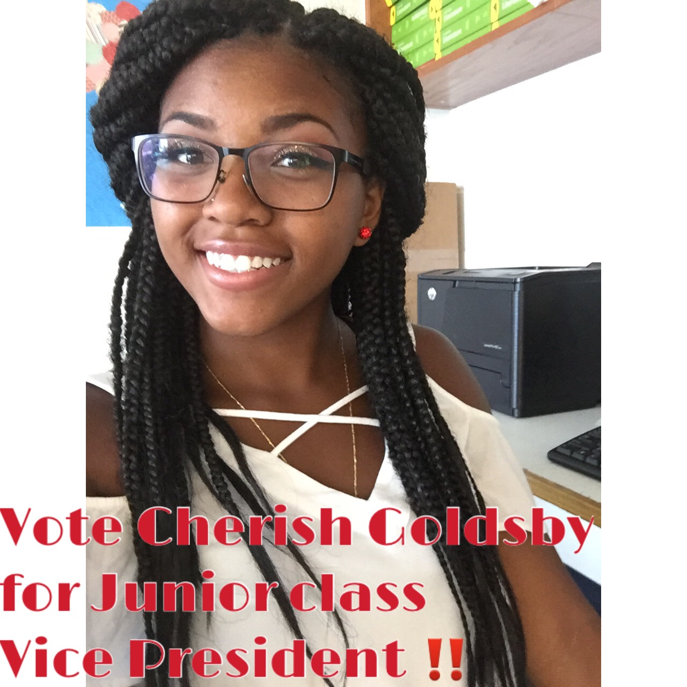

As Vice President of the Norview High School's Junior class, I have plans to make the appropriate preparations during our Junior year to make our Senior year a success. Because I have prior experience from being the Vice President of the class of 2018 last year, I already have the background knowledge to get right down to business as soon as I get back in office. With new ideas as well as a listening ear, I will make sure that everything that is done for the class of 2018 suits our interests and is beneficial to our class as a whole.
Running for Junior class Vice President is a title that comes with stupendous amounts of responsibility and I'm that responsible person for the job. I've always been complimented for my work ethic and ability to multitask all while being able to depend on when I'm needed. The class of 2018 needs a lot of things done to in these next two years so, it will take someone with my kind of skills at multitasking and reliablity to get these things done. From Homecoming this year to class rings, from our senior trip to our graduation day, many different things must be planned and prepared for before we are too limited on time. I will make it my top priority that the class of 2018 will have the best Junior and Senior year yet!
 Link to connect to NPS